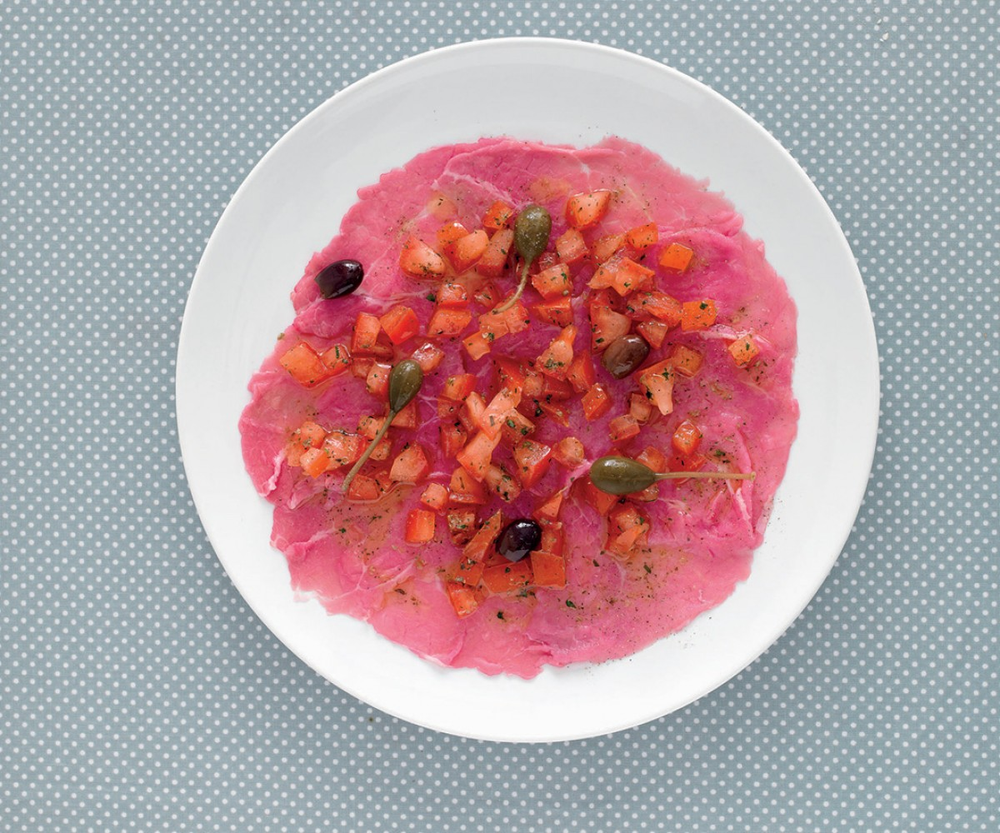

Carpaccio alla Pizzaiola

Wash the tomatoes and remove the seeds; cube the tomatoes then
dress with oil, salt, pepper, lemon juice, and oregano....
h2>LIST OF INGREDIENTS
- 3/4 LB. of beef carpaccio
- 12 WHOLE of Taggiasca olives, pitted
- 12 WHOLE of caper berries, rinsed
- 8 WHOLE of ripe plum tomatoes
- Lemon
- Oregano
- Salt
- Pepper
- olive oil
Directions
- Wash the tomatoes and remove the seeds;
cube the tomatoes then dress with oil, salt, pepper, lemon juice, and oregano.
- Place the carpaccio onto plates, dress with a bit of oil and season with
salt and pepper; top with the cubed tomatoes, olives, and caper berries.